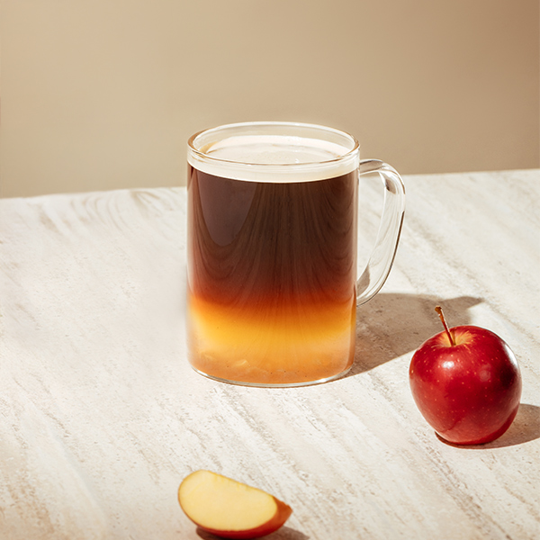
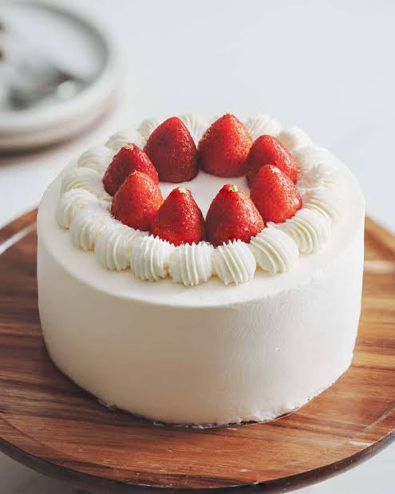
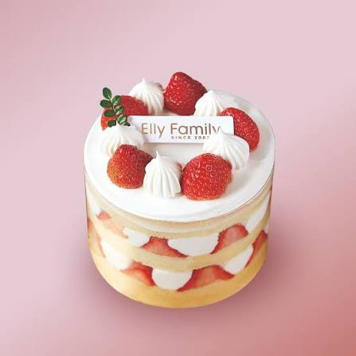
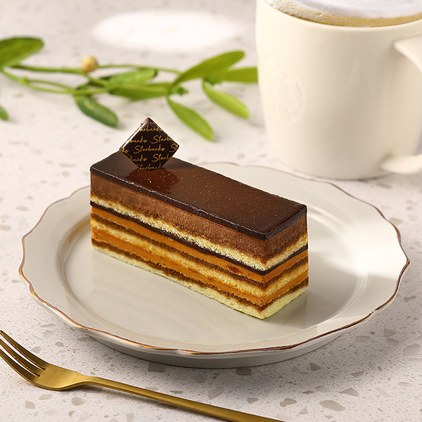
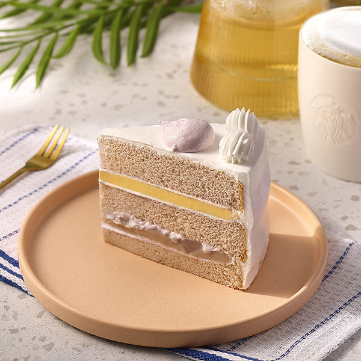
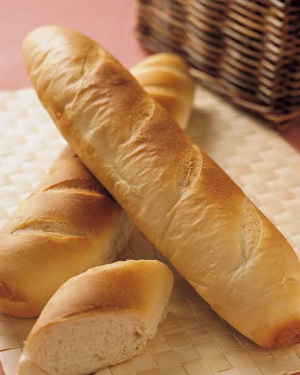
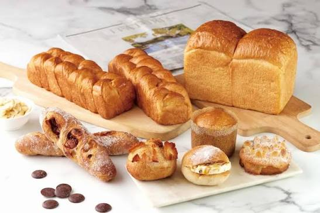
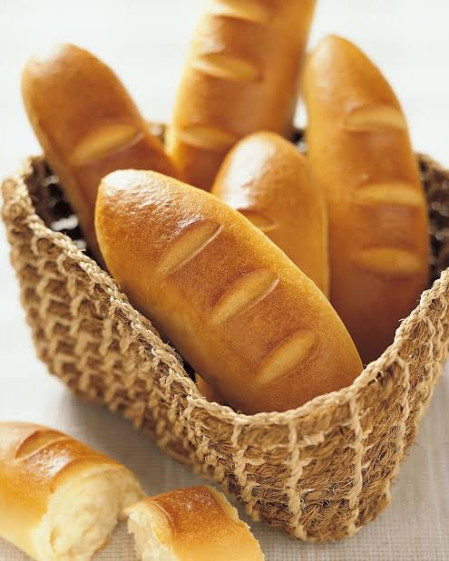
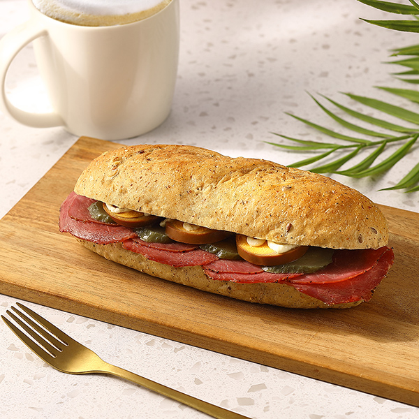

目前資料庫中，星巴克 Starbucks 的所有產品列表
| 產品編碼 | 產品名稱 | 售價 | 產品描述 | 產品圖示 | 現有庫存 | 最後異動時間 |
|---|---|---|---|---|---|---|
| tea01 | 水之森玄米抹茶 | NT$ 65 | 嚴選靜岡抹茶搭配焙煎玄米，茶湯翠綠，帶有濃郁的米香與抹茶回甘。 |  | 120 | 2026-04-29 20:30:00 |
| tea02 | 英倫伯爵紅茶 | NT$ 55 | 特選錫蘭紅茶為基底，佐以佛手柑香氣，茶感醇厚，散發迷人優雅的英倫風情。 |  | 115 | 2026-04-29 20:30:00 |
| tea03 | 珍珠鮮奶 | NT$ 75 | Q彈手作珍珠搭配綠光牧場直送鮮乳，濃郁奶香與黑糖香氣完美融合。 |  | 108 | 2026-04-29 20:30:00 |
| tea04 | 手炒黑糖鮮奶 | NT$ 80 | 職人每日手工慢炒黑糖，淋上醇厚鮮奶，甜而不膩，帶有獨特焦糖香。 |  | 95 | 2026-04-29 20:30:00 |
| cake01 | 草莓鮮奶油蛋糕 | NT$ 120 | 綿密海綿蛋糕搭配新鮮草莓與特調鮮奶油，甜而不膩的夢幻滋味。 |  | 50 | 2026-04-29 20:30:00 |
| cake02 | 芒果夏洛特 | NT$ 130 | 外圍酥脆手指餅乾，包裹著香濃芒果慕斯與新鮮芒果果肉，夏日限定。 |  | 45 | 2026-04-29 20:30:00 |
| cake03 | 經典黑森林 | NT$ 110 | 濃郁巧克力蛋糕體加上酒漬櫻桃，鋪滿巧克力碎片，經典德式風味。 |  | 60 | 2026-04-29 20:30:00 |
| cake04 | 法式檸檬塔 | NT$ 100 | 酥脆塔皮搭配酸甜平衡的法式檸檬奶油餡，清新解膩的好選擇。 |  | 55 | 2026-04-29 20:30:00 |
| bread01 | 法式經典長棍 | NT$ 65 | 外皮酥脆內裡充滿麥香，適合單吃或搭配濃湯的經典法國麵包。 |  | 80 | 2026-04-29 20:30:00 |
| bread02 | 綜合雜糧麵包 | NT$ 80 | 富含多種穀物與堅果，口感紮實有嚼勁，健康滿分的美味選擇。 |  | 70 | 2026-04-29 20:30:00 |
| bread03 | 奶油海鹽羅宋 | NT$ 70 | 濃郁奶油香氣與微鹹海鹽的完美結合，層層分明的酥脆口感。 |  | 90 | 2026-04-29 20:30:00 |
| bread04 | 香蒜帕瑪森 | NT$ 75 | 塗滿特製香蒜奶油與帕瑪森起司，烤至金黃酥脆，香氣四溢。 |  | 85 | 2026-04-29 20:30:00 |